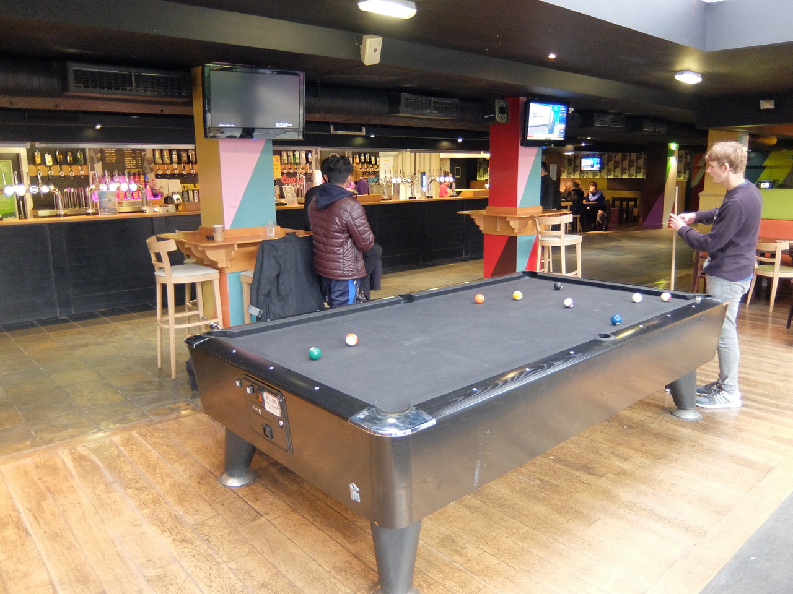

Go out
How can you entertain yourself in the Students' Union?
At Sheffield Students' Union, there's always so much to do. Be it day or night, week or weekend, there is always an event happening somewhere in the Students' Union!
Bar One
Not only do Bar One sell amazing food and drinks, they also hold amazing events to go with that food. Want to sing along to some karaoke? Or go to a quiz on your favourite film? Then you should definitely be going there more often. Click here for a list of events and I can guarantee you'll find at least one you'll want to go to!
Cinema
A cinema?!? Yes! A cinema. Hidden away on Level 2 of the Students' Union there's the university's very own cinema. Showing a wider range of films than any cinema you've ever been to, there is something for everyone being shown. Not only do they show films in the cinema, they also hold "How to run a cinema" workshops regularly throughout the year! Click here to see a list of film showings.
Club nights
I bet the first time you stepped foot inside the Students' Union you had absolutely no idea that there was proper nightclub a few metres below you. Regular club nights are held in Foundry, with a different event almost every day and two rooms inside. There will definietly be at least one club night you just can't wait to get back to! Check out Foundry's upcoming events.
Forge Media
Forge Media is the number one place to go for all news related to Sheffield, the University, and anything that's popular. They report on almost everything relevant, which is why it's so easy to sit and scroll through the website and lose track of time. Have a little look if you don't believe me.